01MAIN FIELD
00
OUR ATTITUDE
HUMAN IDEAS / MACHINE SPEED
社員＝AI。 人間＝エンタメ出身。
AIの圧倒的なスピードと、エンタメで磨いたユニークな発想。その両方で、難しいテクノロジーを事業で使える体験へ変えます。
01
THREE BUSINESS FIELDS
ONE TEAM / THREE FIELDS
BANTEXの3部門。
株式会社バンテックスは、AI、デジタルサイネージ、パイプベンダーを軸に、企画・制作・導入まで相談できる総合クリエイティブカンパニーです。
02SPACE MEDIA
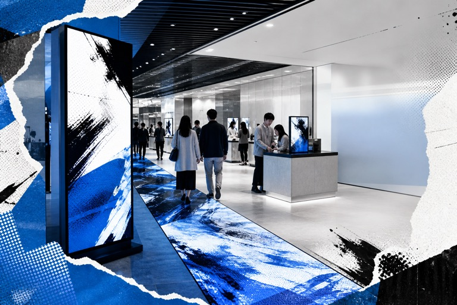
03INDUSTRIAL
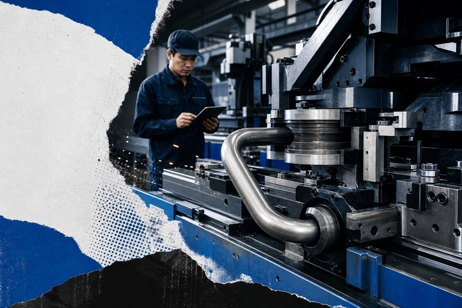
02
RECOMMENDED SERVICES
RECOMMENDED / READY TO USE
ご相談が多い、オススメのAI。
店舗のSNS運用、広告やLPに使う動画制作、こだわりを絞ったHP制作。現場へ導入しやすい3サービスを先にご紹介します。
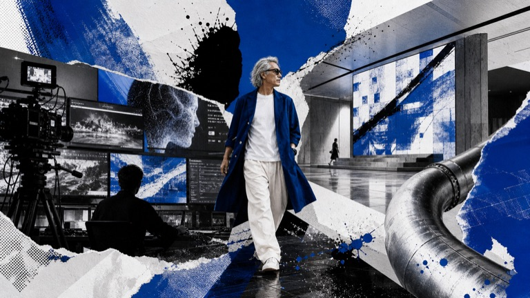
LINE × INSTAGRAM
ココトモSNS
LINEで写真を送るだけ。Instagram投稿までAIで自動化。
AIが投稿文とハッシュタグを作り、決めた時間に自動投稿。飲食店、美容室、サロンなど、発信を続けたい店舗向けです。
- 対象
- 店舗・サロン・飲食店
- 料金
- 月額 9,800円から
AI MOVIE / AD / LP / SNS
AI映像制作
撮影コストを抑えながら、伝わる動画素材を用意する。
テキストや画像1枚から、CM、SNS動画、企業PV、LP用ビジュアルまで。撮影・モデル・スタジオを毎回用意しにくい事業者向けです。
- 用途
- 広告動画・SNS動画・LP素材
- 料金
- 60,000円から
AI GENERATED / ONE PAGE
OnePage-Flash
こだわりを捨てれば、HP制作を3,980円（税込）で。
画像なし、1ページ超シンプル、URLなんでもOK。まず公開することを優先したい個人・店舗向けのHP制作です。
- 対象
- まず公開したい個人・店舗
- 料金
- 初期3,980円 / 月額480円（税込）
03
AI SERVICE LIBRARY
FIND BY PURPOSE
目的から選べるAIサービス。
SNS運用、動画制作、商圏分析、iPhoneアプリなど、公開中のサービスを目的別に探せます。
19 SERVICES / FILTER ACTIVE
01
競艇AI分析 / iPhone
APP STORE審査中↗
02BoatSim
AI分析を、6艇の3Dレースで見る。
LINE × Instagram
月額 9,800円から↗
03ココトモSNS
LINEで写真を送るだけ。Instagram投稿まで自動化。
広告・LP・SNS
60,000円から↗
04AI映像制作
広告・SNS向けのAI映像を、短時間で制作。
HP制作 / AI自動生成
初期3,980円↗
05OnePage-Flash
こだわりないなら、HP制作を3,980円（税込）で。
出店分析 / iPhone
アプリ無料↗
06Market Scope
地域と業種を選ぶだけ。商圏分析をiPhoneで。
LINE × AI / 顧客対応
詳細はページへ↗
07ココトモ カスタマー
LINE友達登録だけでAIが24時間自動対応。
業務自動化 / 24時間稼働
詳細はページへ↗
08AI社員を作りませんか？
あなたの会社専用のAI社員で業務を自動化。
事業立ち上げ / 一括支援
300,000円から↗
09事業立ち上げパック
事業計画・HP・ロゴ・SNS戦略を一括サポート。
不動産市場分析
無料から↗
10AI不動産市場レポート
エリア名を入れるだけで市場レポートを自動生成。
商圏分析
無料から↗
11AI出店商圏レポート
人口・競合・消費力をAIで分析。
士業商圏分析
無料から↗
12AI士業商圏レポート
6士業の競合密度と開業適性を一括分析。
期限管理 / iPhone
無料版あり↗
13かんたん期限帳
車検、保証書、契約更新を端末内で管理。
贈答記録 / iPhone
無料↗
14贈答メモリー
贈り品も、頂き物も、写真付きで記録。
防災 / iPhone
完全無料↗
15安否リレー
通信遮断でも、避難所間で安否情報を受け渡す。
QR会計レジ / iPhone
無料版あり↗
16簡単QRレジ
POS不要。スマホだけで完結する小さなお店向け会計。
3D物理検証 / iPhone
無料↗
17クルーン検証アプリ
クルーン皿と玉の動きを3Dで観察。
漢字・方位 / Web・iPhone
Web版あり↗
18Kanji Compass
あなたに合う漢字を、方位から見つける。
イベント / Webアプリ
デモ公開中↗
19ゲキッチャ
回答者だけ抽選参加できる、激アツアンケート。
パイプベンダー / 無料Web
無料・登録不要↗
パイプ曲げ検証シミュレーター
材質・寸法・条件から曲げ可否をその場で試算。
04
PRODUCTION WORKS
LIVE / MADE BY BANTEX
公開中のLP・コンテンツ制作実績。
実際に公開しているLP、Webツール、ゲームから代表例をご紹介します。
煌きTIMES
キャラクター紹介とLINEボット導線を組み合わせたファン向け体験LP。
実績を見る ↗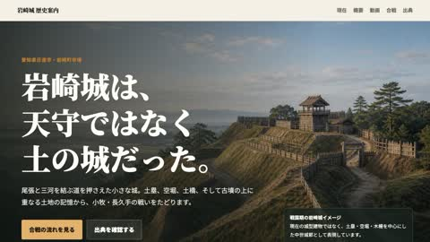
岩崎城の歴史
地域の歴史を、映像と読み物の両方で伝えるコンテンツLP。
実績を見る ↗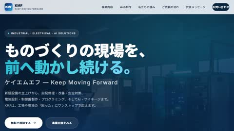
KMF
ケイエムエフ
設備・電気・AI・サイネージまで扱う企業のサービス内容を紹介。
実績を見る ↗にゃんこカラテ
〜リズムでポン!〜
AIがコード・音楽・キャラデザインまで制作したワンボタンゲーム。
実績を見る ↗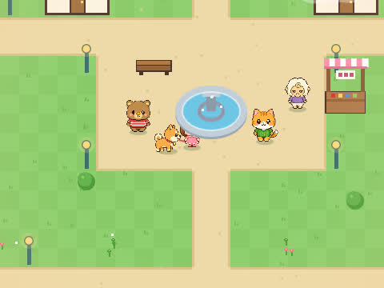
わんこさんぽ
AIがコード・ドット絵・音楽まで制作した、ほのぼの散歩ゲーム。
実績を見る ↗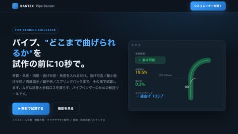
パイプ曲げ検証
シミュレーター
パイプの曲げ可否をその場で試算するWebツールと紹介LP。
実績を見る ↗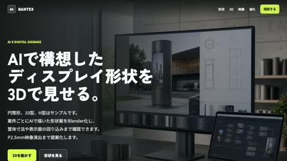
3D AIデジタル
サイネージ
AIで構想した特注サイネージをBlenderとWeb 3Dで提案。
実績を見る ↗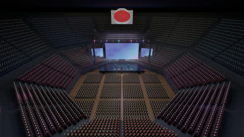
3D会場
座席ビューワー
公開座席図から7,634席を3D再現。全席の見え方をブラウザで確認。
実績を見る ↗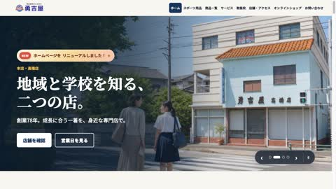
勇吉屋
創業78年の学生服専門店。LINEから新着情報を自動更新。
実績を見る ↗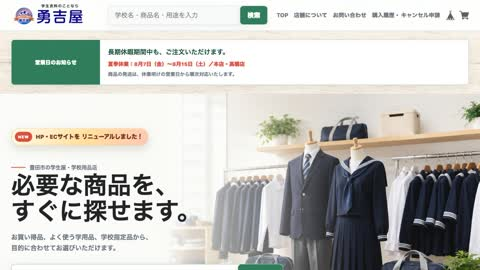
勇吉屋NET
購入履歴や学校名・用途検索も追加したネットショップ刷新。
実績を見る ↗競艇AI分析
BoatSim
AI分析と6艇の3Dシミュレーションでレース展開を可視化。
実績を見る ↗05
BUSINESS SUPPORT & PARTNER
CHOOSE YOUR WAY
自分で進めるか、BANTEXに任せるか。
店舗・開業に必要なHP、EC、SNS、動画制作を目的別に比較できます。BANTEXサービスをご紹介いただくパートナー制度も試験運用しています。
06
COMPANY
BANTEX INC.
名古屋から、実装する。
AI・空間・ものづくりをひとつのチームで。企画、制作、導入、運用まで、事業に合わせてご相談いただけます。
- 社名
- 株式会社バンテックス
BANTEX Inc. - 代表者
- 代表取締役 番野政彦
- 事業内容
- AI / デジタルサイネージ / パイプベンダー
- 所在地
- 〒468-0015
愛知県名古屋市天白区原3丁目304番1号T&Lビル2A - TEL / FAX
- 052-847-7500
FAX: 052-847-7501 - info@bantex.jp
- 適格事業者番号
- T2-1800-0111-7740
07
FAQ
BEFORE YOU ASK
よくある質問
01株式会社バンテックスはどのような会社ですか？
愛知県名古屋市天白区を拠点に、AI、デジタルサイネージ、パイプベンダーの3部門を展開する総合クリエイティブカンパニーです。
02AIサービスにはどのようなものがありますか？
ココトモSNS、Market Scope、AI映像制作、各種商圏レポート、iPhoneアプリなどをご用意しています。
03内容が固まっていなくても相談できますか？
はい。メール、LINE、電話でご相談いただけます。課題の整理から、必要な制作・導入方法を一緒に考えます。
CONTACT / START A PROJECT
そのアイデア、動かそう。
AI活用、映像・HP制作、サイネージ、産業機械まで。まだ輪郭のない相談でも大丈夫です。通常1営業日以内にご返信します。